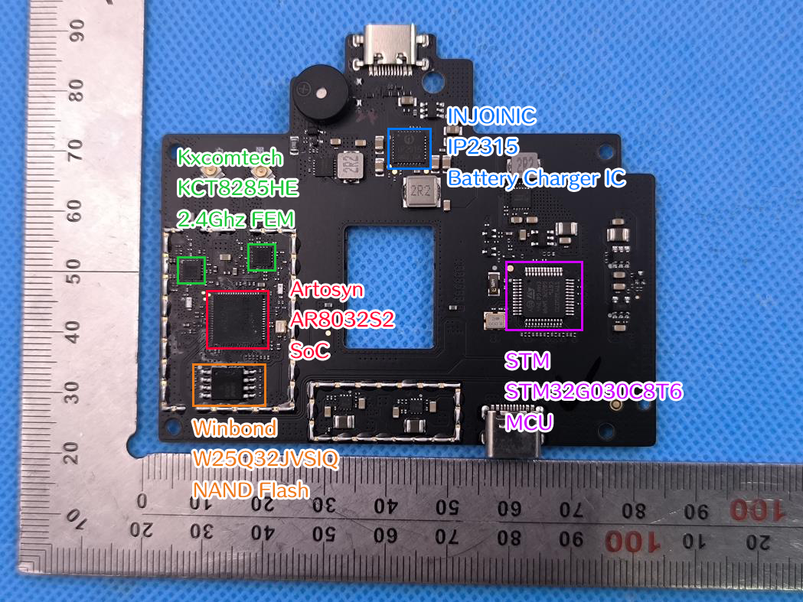

遥控器¶
硬件¶
主板图示¶
图片来自 Potensic PT 1 的 FCC 报告 (2BK8B-DSRC23A)，图片上的标注是手工标注的

硬件详细信息¶
| 类型 | 制造商 | 型号 | 规格 | 手册或详情页 |
|---|---|---|---|---|
| 嵌入式控制器 | STM | STM32G030C8T6 | 64Mhz Cortex-M0+ | 详情页 |
| 图传 | Artosyn | AR8032S2 | XuanTie E907 RV32IMA | Artosyn 产品页, XuanTie E907 详情页 |
| 射频前端 | Kxcomtech | KCT8285HE | 2.4Ghz FEM | 详情页 |
| 存储器 | Winbond | W25Q32JVSIQ | 4MB SPI NOR Flash | |
| 锂电池充电芯片 | INJONIC | IP2315 | 详情页 |
- 在以上列表之 "手册或详情页" 部分中
- "详情页" 表示页面具有这个产品的 DataSheet、UserManual 等全面的资料
- "产品页" 表示页面具有这个产品的部分规格信息，但没有较为详尽的资料
- 留空表示没有找到这个制造商官网的资料，但仍可能存在第三方资料
其中，STM 32 用作处理按键输入、指示灯、电池等，AR8032S2 用作与无人机、手机 App 通信
软件¶
遥控器的软件部分之分析暂未取得更多进展
升级包¶
Potensic 使用一个自定义的软件升级包体，后缀是 .bin。由 4 字节的头部 Magic，以 JSON 存储的 Metadata，经过 AES-CBC 加密的数个 Chunk 组成
无人机和遥控器部分使用相同形式的升级包体，但 AES-CBC 的 Key 不同
Metadata 部分的格式如下所示，提取自 19.01 版本的遥控器端升级包
{
"modules": [
{
"dev_id": [
88
],
"md5": "70a58e5501dda0d08825389c0a2990ae",
"name": "RC_atom2rc_v2.1.5_20241120.bin",
"padded_size": 36640,
"prio": 61,
"product_type": "atom2rc",
"size": 36640,
"type": "rc",
"version": "2.1.5"
},
{
"dev_id": [
226
],
"md5": "809edfe024e71154dce57dc0fc0eb030",
"name": "ITG_atom2rc_v1.0.13_20251128.bin",
"padded_size": 972656,
"prio": 80,
"product_type": "atom2rc",
"size": 972644,
"type": "itg",
"version": "1.0.13"
}
],
"product_type": "atom2rc",
"version": "019.01"
}
其中 RC 部分指 STM32，ITG 部分指 AR8032S2